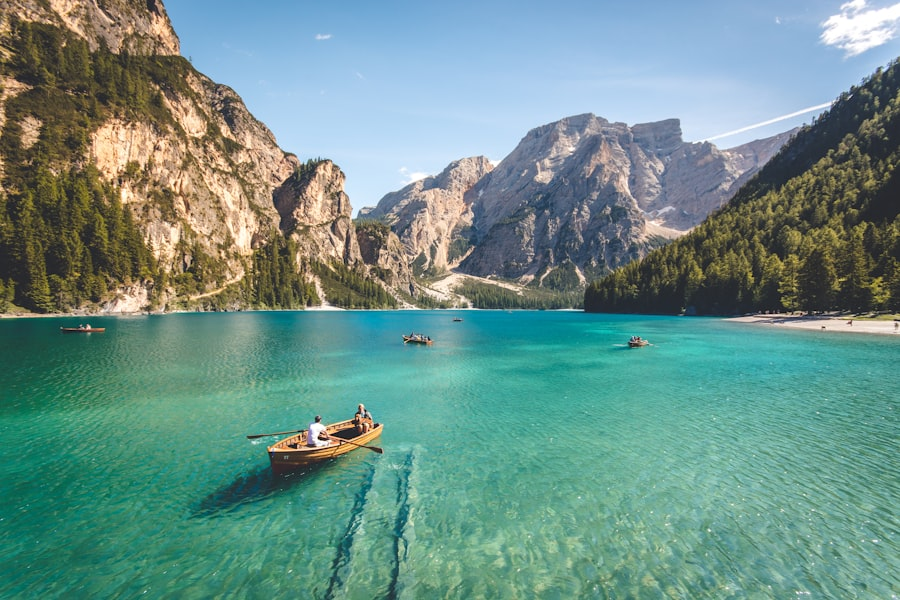
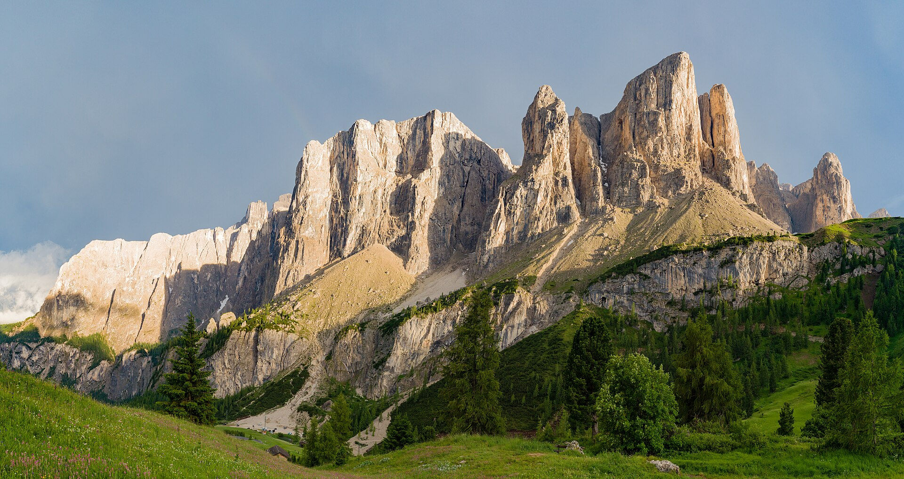

以 Ortisei 为基地的远郊一日游覆盖多洛米蒂最经典的三个目标：Tre Cime di Lavaredo（三峰山，1.5h 车程）、Lago di Braies（翡翠湖，1h 车程）与 Great Dolomites Road（山景公路自驾）。自驾最灵活；无车者可组合火车 + 巴士但耗时翻倍。10 月人少景美，但注意高海拔路面可能结冰。
看点路线
Il Percorso
- 1Great Dolomites Road：Ortisei → Passo Gardena → Corvara → Passo Falzarego → Cortina
- 2三峰山环线徒步：9km / 4h，一战中意奥前线
- 3Braies 湖：翡翠色湖水 + 木船 + Seekofel 山倒影
- 410 月自驾注意：Passo Gardena / Falzarego（2,000m+）路面可能结冰
一日游目标
Escursioni · 5 个选择
Tre Cime di Lavaredo（三峰山）
多洛米蒂的地标三峰：三座独立的石灰岩塔从草甸上直插天际。经典环线 9km（Locatelli Hut → 三峰北壁 → 战壕 → 东侧 → 回程），约 4h。一战中意大利与奥地利在此鏖战，山上仍可见战壕与碉堡。从 Ortisei 自驾约 1.5h（经 Cortina）。

Lago di Braies（布拉伊埃斯湖）
多洛米蒂最上镜的湖泊：翡翠色湖水 + 传统木船 + 背后 Seekofel 山（2,810m）的倒影。环湖步道 3.5km（1h，平缓）。旺季 6:30 前或 17:00 后最美；10 月游客已少，色彩正浓。从 Ortisei 自驾约 1h。

Great Dolomites Road
欧洲最美的山景公路之一：Bolzano → Cortina 全程约 110km，穿越 Passo Gardena（2,121m）、Passo Sella（2,240m）、Passo Pordoi（2,239m）与 Passo Falzarego（2,105m）。每一个 Passo 顶都是观景台。10 月路面可能结冰，出发前查路况。
Passo Gardena 与 Sella 群
从 Selva 驾车上 Passo Gardena 约 20 分钟：山口正对 Sella 巨型岩体（3,152m）的北壁。山口有几家餐厅与免费观景台，是 Val Gardena 最近的高海拔观景点（自驾可达）。
Cortina d'Ampezzo
多洛米蒂最著名的度假镇：1956 年冬奥会主办地，2026 年冬奥会协办。从 Ortisei 自驾约 1.5h（经 Great Dolomites Road）。镇中心步行街 + 奢侈品店 + 咖啡文化；适合作为一日游的中途站（午餐 + 逛街）。
历史故事
Le Storie
壹Great Dolomites Road：一条公路的哲学
从 Bolzano 到 Cortina 的 110 公里山景公路串联了四个山口（Gardena 2,121m / Sella 2,240m / Pordoi 2,239m / Falzarego 2,105m）与无数观景点。官方名称 Grande Strada delle Dolomiti。
驾这条路的正确方式不是"赶路"而是"逛路"：每个山口停下来 15 分钟看山、拍照、喝一杯 espresso，全程慢慢走 5-6 小时。10 月的路面可能结冰（高海拔山口），出发前查 stradeprovinciali.bz.it 路况。
贰三峰山：一个国家的"形象照"
Tre Cime di Lavaredo（Drei Zinnen）是多洛米蒂的地标三峰：大峰 2,999m、西峰 2,973m、小峰 2,857m。三座独立的白云岩塔从草甸上直插天际--多洛米蒂明信片的"默认封面"。
经典环线 9km：Locatelli Hut → 三峰北壁 → 一战战壕 → 东侧 → 回程。约 4 小时，大部分为平缓路。从 Ortisei 自驾约 1.5h（经 Cortina 或 Misurina）。
叁一战的战场
1915-1917 年，意大利与奥匈帝国在多洛米蒂的高海拔山脊上鏖战：士兵在 3,000 米的雪线以上挖战壕、修隧道、建碉堡。Tre Cime 周边的山中仍可见完整保存的战壕网与炮位。
这场"高山战争"造成约 30 万士兵伤亡--大部分死于严寒、雪崩与疾病，而非子弹。今天 Tre Cime 环线途中经过的几段战壕遗迹，是欧洲保存最好的 WWI 高山战场。
肆Braies 湖：翡翠色的秘密
Lago di Braies（Pragser Wildsee）的海拔 1,496 米，湖水呈现不真实的翡翠绿色--这来自水中的冰川矿物微粒（rock flour）对光的散射。湖深 36 米，湖面 31 公顷。
环湖步道 3.5km（1 小时），平缓且老少皆宜。传统木船租赁 €25-40/30 分钟。10 月游客少了大半，清晨可能有薄雾在湖面。从 Ortisei 自驾约 1h（经 Brunico）。
伍Braies 湖的二战往事
1943 年 9 月，墨索里尼被推翻后，德军将一批被囚禁的意大利政要在 Lago di Braies 湖边的 Hotel Pragser Wildsee"集中关押"（其中有未来的总统 Sandro Pertini? 实为其他政要）。
这段历史让这个风景如画的湖有了政治维度：它是意大利从法西斯转向共和的"中转站"之一。今天酒店仍在营业，可以在此住一晚或在露台喝一杯。
陆Cortina：冬奥之城
Cortina d'Ampezzo（1,224m）是多洛米蒂最著名的度假镇：1956 年冬奥会主办地，2026 年冬奥会协办。镇中心的步行街集中了奢侈品店、珠宝行与咖啡馆--意大利山区最"时髦"的一条街。
从 Ortisei 自驾约 1.5h（经 Great Dolomites Road）。多数人把它作为三峰山一日游的中途站（午餐 + 逛街 2-3 小时）。10 月淡季：店铺开门但游客少。
柒自驾一日游的"黄金路线"
从 Ortisei 出发的一日游最佳路线：Ortisei → Passo Gardena（20 分钟）→ Corvara（40 分钟）→ Passo Falzarego → Cortina 午餐（全程 1.5h）→ Tre Cime 徒步（3h）→ Braies 湖（1h）→ 回程经 Brunico（2h）。
总计约 10-11 小时（含停留）。如果太紧，拆成两天：Day 1 做 Great Dolomites Road + Cortina，Day 2 做 Tre Cime + Braies。或者只选其中两个目标做"休闲版"。
捌无车者的替代方案
没有自驾也能做远郊一日游，但耗时翻倍：Bus 350 → Bolzano → 火车 → Fortezza → Dobbiaco → Bus 444 → Tre Cime（约 3-3.5h 单程）。Braies 湖可从 Dobbiaco 坐 Bus 460（约 40 分钟）。
更实际的无车方案：把时间多分配给 Val Gardena 的缆车 + Alpe di Siusi 的徒步。从 Ortisei 门口就能做的体验，胜过花 3 小时在路上的"打卡游"。
玖10 月自驾的注意事项
10 月的多洛米蒂高海拔路面（2,000m 以上）可能结冰：特别是清晨与阴面弯道。Passo Gardena / Sella / Pordoi / Falzarego 都在 2,100m 以上。
必查：出发前一晚与当天早上查 stradeprovinciali.bz.it（南蒂罗尔公路局实时路况）。必带：防滑链（即使天气预报晴朗）。租车时确认是否配备。轮胎：10 月通常不需要冬胎，但高海拔弯道有冰。
拾Bolzano：进山前最后的"城市"
Bolzano / Bozen（264m）是进入多洛米蒂的门户：南蒂罗尔首府、奥意文化交汇点。从 Ortisei 乘 Bus 350 约 50 分钟可达。
值得停留的理由：A) 考古博物馆的"冰人奥茨"（Ötzi，5,300 年前的冰川木乃伊--欧洲最著名考古发现）；B) 主街的拱廊与市场（每天上午）；C) 南蒂罗尔葡萄酒博物馆。从 Ortisei 出发的半天往返刚好。
参观贴士
Consigli Pratici
- 自驾一日游推荐路线：Ortisei → Passo Gardena → Corvara → Passo Falzarego → 三峰山 → Braies 湖 → 回程（全程约 5-6h 驾驶 + 停留，一天紧凑或两天从容）
- 三峰山停车：旺季（6-9 月）Misurina 停车场 €30 含接驳；10 月通常可直接开到 Rifugio Auronzo 停车（€25）
- Braies 湖木船租赁 €25-40/30min；10 月水位可能降低，但倒影依然完美
- 10 月 Passo Pordoi / Falzarego 路面可能结冰：备防滑链 + 出发前查 stradeprovinciali.bz.it 路况
- 无车替代方案：Bus 350 → Bolzano → 火车 → Fortezza → Dobbiaco → Bus 444 → 三峰山（约 3h 单程，全程用 Mobilcard）
顺路同游
Da Non Perdere